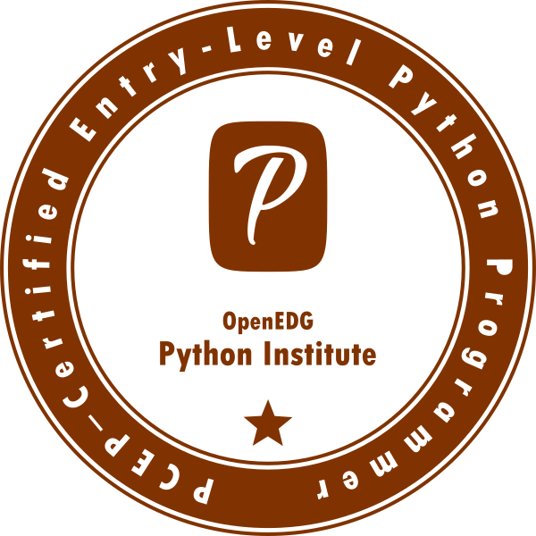
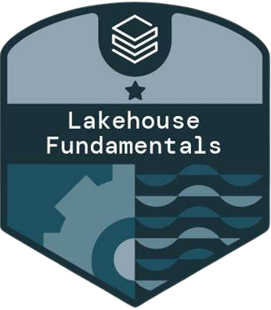
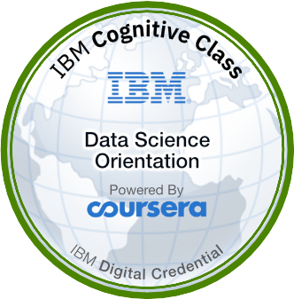

Idiomas


Hola, ¡bienvenido!
Muy placer, mi nombre es
Alison Araújo
Analista de Datos
Analista de Datos
Me llamo Alison y soy estudiante de Economía en la Universidad Federal de São Paulo (UNIFESP). Además de mis estudios, mi afición es la impresión 3D, una pasión que me permite explorar la creatividad y la tecnología de forma práctica.
También soy autista (nivel 1), lo que me da una perspectiva única del mundo y me permite abordar problemas y retos de forma creativa e innovadora. El análisis de datos siempre ha sido un área que me ha fascinado, y la combinación de mi formación académica con mi experiencia práctica y mi enfoque analítico me permite hacer una valiosa contribución a cualquier proyecto u organización.
Además, siempre busco profundizar en mis conocimientos de estadística. Creo que una sólida base estadística es esencial para garantizar la precisión y pertinencia de los análisis. Además, la capacidad de presentar los resultados de forma clara y eficaz es crucial para que los conocimientos se comprendan y se utilicen eficientemente.
Busco un enfoque técnico y analítico, así como una comprensión profunda de los conceptos y fundamentos que intervienen en los proyectos. Creo que una comprensión amplia es fundamental para garantizar la precisión y eficacia de las operaciones, lo que se traduce en un menor gasto de recursos y mejores resultados.
A continuación se indican los niveles y lenguajes que utilizo para resolver problemas empresariales:
He aquí los principales hitos de mi carrera profesional:
Novembro, 2022 - Outubro, 2023
Trabajé en el área de Customer Research & Analytics, validando series macroeconómicas utilizando BigQuery para consultas SQL y SAS para el procesamiento de datos. Documenté el proceso de validación para garantizar la integridad de los datos. Utilicé RPA para automatizar y mejorar el análisis de datos, incluida la recopilación automatizada a través de Webscraping. Trabajé en la migración del motor ETL de SAS a Python, aumentando la escalabilidad de las operaciones de preprocesamiento y procesamiento de datos.
Febrero, 2022 - Noviembre, 2022
Trabajé en la creación de calendarios de gestión de proyectos, la automatización de procesos (comprobantes y control de asistencia), el apoyo a la gobernanza, la realización de presentaciones institucionales, el enlace con proveedores, la prestación de apoyo técnico a la plataforma de educación financiera Próximo Passo, el enlace con las demás Universidades de LATAM y el registro de Preparadão para los enlaces descendentes de educación en vuelo de la Nasa.
Septiembre, 2021 - Actual
Ayudé con la planificación estratégica utilizando SWOT y estableciendo un BSC para optimizar la unidad organizativa. Además, trabajo en el sector de la inteligencia de datos para proporcionar automatización con Excel y power bi a fin de gestionar informes para posibles inversores. Gracias al trabajo analítico, fue posible organizar las unidades de negocio y proporcionar información más precisa sobre la organización. Además, creé una hoja de cálculo para el seguimiento de proyectos basada en la metodología Kanban para facilitar la interacción entre la dirección y los equipos.
Enero de 2024
Conocer metodologías que permitan la aceleración y gestión controlada de proyectos es fundamental para el área de datos. Lean y Seis Sigma traen enfoques y metodologías para apalancar proyectos en diferentes industrias. El cinturón amarillo se vuelve capaz de gestionar proyectos de baja complejidad.
Enero, 2024
La certificación de Cinturón Blanco es el primer paso en la jerarquía de cinturones, de modo que nos introducimos en la metodología de tal forma que nos permite tener una visión organizativa refinada y actuar de acuerdo con los principios lean y six sigma que se difunden de forma enfática en las organizaciones.
Diciembre, 2023
Este programa de formación, de unas 200 horas dedicadas al estudio del análisis de datos y a la comprensión del ciclo de vida de un dato, me introdujo en la tríada de herramientas utilizadas con frecuencia en el mercado: SQL, Python y Power BI. Las herramientas son los accesorios utilizados para resolver problemas empresariales, ya que todos los laboratorios y ejercicios están orientados al análisis de datos.
Deciembre, 2023
Desarrollé habilidades de modelado de datos mediante DBSchema, utilizando el propio Power BI y realizando conexiones a bases de datos dentro de MySQL. La maquetación visual de un informe de gestión fue un punto de atención constante, dada la necesidad de transmitir los resultados de los análisis y las tendencias presentados de forma que resultara más fácil de entender para el área de negocio.
Deciembre, 2023
Desarrollé conocimientos de programación con Python, uno de los lenguajes más utilizados del mundo. Aprendí los conceptos fundamentales del análisis de datos y la ciencia de datos. Adquirí experiencia práctica con ejemplos, cuestionarios, ejercicios y proyectos. Obtuve un certificado de finalización incluido y gratuito. Adquirí habilidades vitales para el papel de un analista de datos, incluyendo: Manejo de valores perdidos, Limpieza y procesamiento de datos, Análisis estadístico descriptivo, Binarización y codificación de variables categóricas, Ingeniería de atributos.
Deciembre, 2023
Python Essentials 1, ofrecido por Cisco Networking Academy y el Python Institute, es un curso preparatorio para la certificación PCEP-30-02 que incluye términos fundamentales, lógica y estructura, literales, variables, sistemas numéricos, operadores, tipos de datos, operaciones de E/S, mecanismos de control de flujo, colecciones de datos, funciones, excepciones, así como los fundamentos de la sintaxis, semántica y entorno de ejecución de Python.
Noviembre, 2023
En este curso pude profundizar en Python y explorar bibliotecas como Pandas y Matplotlib. Pude llevar a cabo análisis exploratorios de datos, modelado estadístico y aprendizaje automático en proyectos prácticos.
Octubre, 2023
Pude realizar manipulación de datos con Python, operaciones complejas, uso de bucles y operadores condicionales, así como visualización de datos (DataVis) y automatización de hojas de cálculo.
Julio, 2022
Tuve una introducción a la historia de python y pude desarrollar la lógica de programación, ya que el enfoque de este curso es introducir y presentar los conceptos fundamentales.
Octubre, 2023
Pude utilizar Microsoft Power BI en profundidad, pero también aplicar técnicas de Data Science para generar modelos predictivos y extraer insights para la toma de decisiones. También integrará Power BI con los lenguajes R y Python.
Octubre, 2023
Perfeccioné mis conocimientos de Web Scraping -uno de los pilares de la Automatización Robótica de Procesos-, lo que me permite agilizar la recogida y transformación de datos, así como conectarme directamente al SGBD que almacenará la información procedente de las fuentes de foco de extracción.
Septiembre, 2023
Aprendí los fundamentos de la plataforma Lakehouse de Databricks, que representa una revolución al unificar los datos y la inteligencia artificial (IA) en una única plataforma abierta.
Julio, 2023
El conocimiento de la gobernanza de datos permite una mejor gestión, así como la definición de la calidad de los datos. Esto es fundamental para una entrega más precisa al hacer webscraping, así como para entregar un modelo estadístico más preciso.
Julio, 2023
La lógica de programación es una habilidad que puede transferirse a otros lenguajes y no se limita al diagrama de Veinn o a los teoremas de De Morgan, sino que abarca el uso de estructuras de control, verificación y ejecución.
Junio, 2023
Desarrollé habilidades avanzadas en categorización, codificación y binarización de variables, así como en consultas con uniones de tablas. Además, adquirí experiencia en el análisis de datos con agregación, la aplicación de funciones de ventana y subconsultas, la limpieza y el tratamiento de datos, y la programación en la base de datos.
Febrero, 2023
Este curso forma parte del Certificado Profesional de Programador SAS y se imparte utilizando SAS On Academics, por lo que aprendí a explorar y validar datos, prepararlos mediante subconjuntos y nuevos cálculos de columnas, analizar e informar datos, exportar resultados y utilizar SQL en SAS para consultas y uniones de tablas.
Deciembre, 2022
Aprendí y desarrollé competencias fundamentales en Big Data. Comprendí la importancia de Big Data para transformar los datos en información valiosa y aprendí a aplicar estos conceptos a proyectos de análisis de datos.
Deciembre, 2022
He aprendido y desarrollado una comprensión exhaustiva de la Ciencia de Datos. Este curso me ha dado una visión clara de los conceptos fundamentales, las aplicaciones prácticas y la importancia de los datos en el escenario actual. Además, aprendí sobre las carreras con mayor demanda en el campo de los datos.
Junio, 2022
Aprendí desde lo más básico hasta tareas avanzadas en Excel, incluyendo formato, fórmulas, funciones, tablas dinámicas, gráficos complejos, cuadros de mando y macros (VBA).
Julio, 2022
Estudio Economía en la Universidad Federal de São Paulo (UNIFESP), que tiene un enfoque más académico, pero también abarca la gestión financiera tanto a nivel macroeconómico como microeconómico. Uno de los pilares de la economía es la visión social, que amplía el concepto aportado por los análisis.
Octubre 2021 - Octubre 2023
Me licencié en gestión financiera en el Escuela Superior de la Capital Federal (FECAF), lo que me permitió comprender mejor la contabilidad y las relaciones económicas de las empresas, y llevar a cabo operaciones más planificadas desde el punto de vista financiero.
Deciembre, 2023

Obtuve la certificación de nivel básico del Python Institute, que valida los conocimientos básicos del lenguaje Python.
Deciembre, 2023

El curso, ofrecido por Cisco Networking en colaboración con el Python Institute, proporciona una sólida introducción a Python y a los frameworks que se incluirán en el examen de certificación PCEP.
Septiembre 2023 - Septiembre 2024

El curso, ofrecido por Cisco Networking en colaboración con el Python Institute, proporciona una sólida introducción a Python y a los frameworks que se incluirán en el examen de certificación PCEP.
Enero, 2023

Este curso es impartido por IBM en colaboración con Coursera y tiene como objetivo contextualizar al alumno con el escenario de Data Science.
Julio, 2021
La Olimpiada Internacional de Economía es una competición para estudiantes de secundaria que reúne a alumnos de distintos países. Trabajé sobre la viabilidad económica de la segmentación de la empresa RAF en la producción de vehículos y los posibles riesgos del mercado. El caso empresarial tuvo lugar en Letonia, con vistas a la red ferroviaria del país.
Comprobar certificadoAgosto, 2021
En este concurso, nuestro objetivo era estructurar los costes de explotación para la transformación del mercado de las energías no renovables a la energía fotovoltaica. El CB tuvo lugar en China, con vistas a competir con Arabia Saudí y utilizando blockchain.
Febrero , 2022
En este BC teníamos el reto de desarrollar formas de aumentar el número de grupos de interés para la OEI, basándonos en las métricas ya asignadas. En el caso de las redes sociales, no había un país concreto, sino el público objetivo de la OEI (estudiantes de secundaria y universitarios) y tuvimos tres mentores que recibieron medallas de bronce, plata y oro.
Comprobar certificadoMe gustaría invitarle a ver algunos de los proyectos que he realizado. Si te interesa saber más sobre ellos o tienes alguna sugerencia, ¡estaré encantada de hablar contigo!